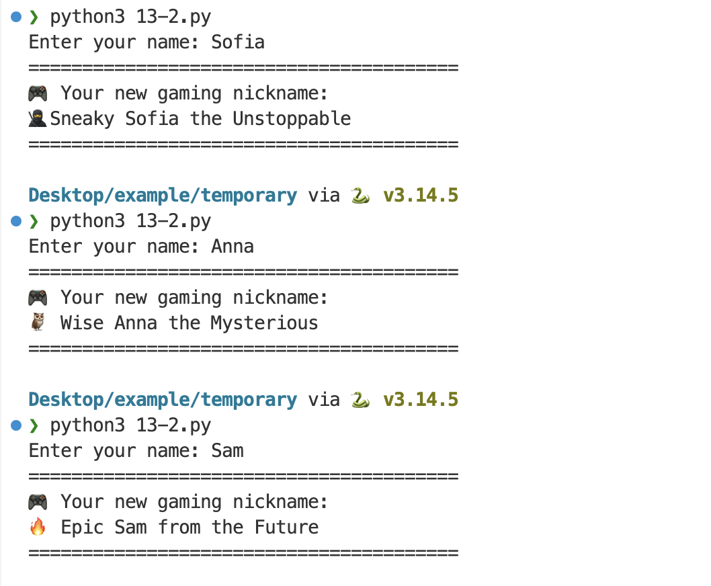
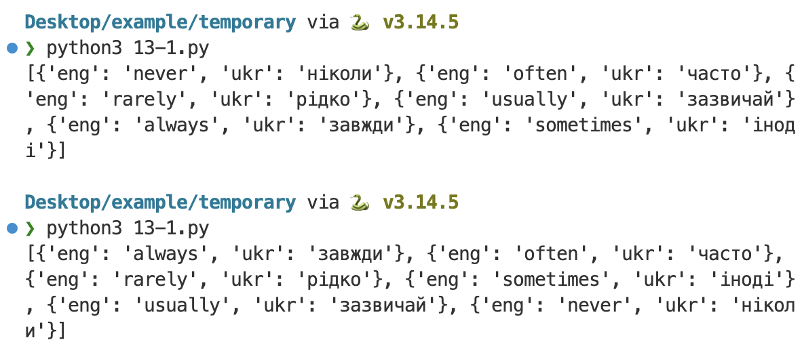
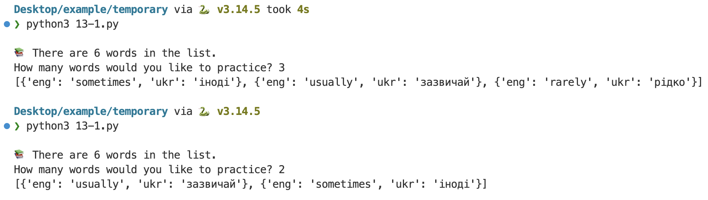
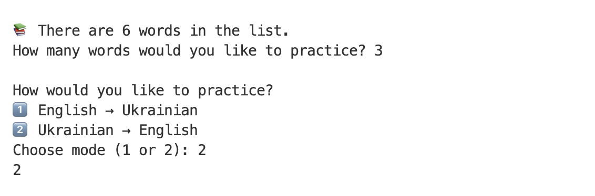

Повторення
Повторення
Функції
Перш ніж переходити до нового, швидко згадаємо:
- Що таке функція і навіщо вона потрібна.
- Чим відрізняються параметри та аргументи.
- Чим return відрізняється від print().
def add(a, b):
return a + b
def cube(n):
return n ** 3
print(add(2, 3))
x = add(2, 3)
print(x)
c = cube(x)
print(c)Питання для перевірки
- Що тут a і b – параметри чи аргументи?
- Що поверне виклик add(2, 3)?
- У чому різниця між print(add(2, 3)) і x = add(2, 3)? Що можна зробити зі змінною x, чого не можна зробити з надрукованим значенням?
- Що виведеться на екран після виконання цього коду?
 Нова тема
Нова тема
Навіщо ділити код на функції та створювати main()?
Уяви, що ти читаєш рецепт складного торта, який написаний одним величезним абзацом на дві сторінки. Читати його дуже незручно. Набагато легше, коли рецепт поділений на логічні етапи: 1) зробити тісто, 2) спекти коржі, 3) збити крем.
Те саме з кодом. Коли програма виростає до 50 чи 100 рядків, читати її "суцільним полотном" стає неможливо. Тому програмісти пакують окремі дії у дрібні функції. Кожна функція виконує лише одне своє маленьке завдання.
Але коли функцій стає багато, з'являється нове питання: хто керує тим, у якому порядку вони запускаються?
Можна просто написати їхні виклики один за одним десь у кінці файлу. Це спрацює, але створить проблеми: тимчасові змінні стануть "глобальними" (їх зможе випадково зламати інша частина коду), а щоб зрозуміти логіку програми, доведеться гортати весь файл.
Тому ми створюємо одну головну функцію — main().
Приклад 1: Математичний конвеєр
Уяви команду з трьох людей, які виконують обчислення по черзі:
- Перша людина додає два числа і передає результат далі.
- Друга бере цей результат, множить його на інше число і теж передає результат.
- Третя отримує обидва попередні результати і підносить перше число до степеня другого!
У коді функція main() працює як їхній керівник: вона сама нічого не рахує, а лише "бере папірець із результатом" у однієї функції і передає його іншим.
def main():
# 1. Додавання
sum_val = add(2, 3)
# 2. Множення (беремо результат додавання)
mult_val = multiply(sum_val, 2)
# 3. Піднесення до степеня (беремо обидва попередні результати)
final_val = power(sum_val, mult_val)
# 4. Виведення
show_result(final_val)
def add(a, b):
return a + b
def multiply(a, b):
return a * b
def power(base, exponent):
return base ** exponent
def show_result(result):
print(f"Фінальний результат: {result}")
if __name__ == "__main__":
main()Розбираємо разом
- Що поверне функція add(2, 3) і в яку змінну всередині main() збережеться цей результат?
- Яке саме значення передається у функцію multiply замість змінної sum_val? Яким буде результат множення?
- Подивись на рядок power(sum_val, mult_val). Які два числа насправді туди потраплять під час виконання програми?
Що таке if __name__ == "__main__":?
Щоб зрозуміти цей рядок, згадай, як ми підключаємо готові інструменти: наприклад, import random або import math.
Модуль math — це такий самий файл з кодом на Python, всередині якого лежить багато корисних функцій. Але коли ми пишемо import math у своєму коді, цей файл не починає раптом щось друкувати на екран чи запитувати в нас числа. Він просто "тихо" завантажує свої інструменти, щоб ми могли ними скористатися.
А тепер уяви, що ти написала дуже класну функцію у своєму файлі і колись захочеш підключити її в інший свій проєкт (так само зробити import). Якби в кінці файлу просто стояло main(), то під час імпорту твоя програма одразу б запустилася без дозволу!
"Якщо цей файл відкрили напряму (щоб скористатися програмою) — тоді вмикай main(). Але якщо цей файл просто імпортували, щоб позичити наші функції як інструменти (як ми позначаємо у math) — тоді нічого сам не запускай!"
Приклад 2: Генератор нікнеймів
Ще один приклад: міні-програма, яка генерує нікнейми для гри. Тут чітко видно три етапи: ми отримуємо дані від користувача, обробляємо їх (додаємо випадкові слова), а потім красиво виводимо на екран.
import random
def main():
user_name = get_name() # 1. Отримуємо дані
nickname = generate_nickname(user_name) # 2. Обробляємо їх
show_profile(nickname) # 3. Виводимо результат
def get_name():
return input("Enter your name: ").strip().capitalize()
def generate_nickname(name):
adj = random.choice(["🔥 Epic", "😴 Sleepy", "🦉 Wise", "🍀 Lucky", "🥷 Sneaky"])
title = random.choice(["of the Shadows", "the Unstoppable", "the Mysterious", "from the Future"])
return f"{adj} {name} {title}"
def show_profile(result):
print("=" * 40)
print("🎮 Your new gaming nickname:")
print(result)
print("=" * 40)
if __name__ == "__main__":
main()

 Проєкт, частина 1
Проєкт, частина 1
Vocabulary Builder – Частина 1
Сьогодні ми напишемо main() і три функції: get_practice_words(), limit_words() та choose_mode(). Будуємо їх по черзі — і одразу під'єднуємо кожну до main(), щоб бачити, як усе працює разом.
Крок 0 – Основа програми
Ось стартовий код (усі функції поки що порожні – pass потрібен, щоб програма не видавала помилку порожнього блоку):
import random
WORDS = [
{"eng": "always", "ukr": "завжди"},
{"eng": "usually", "ukr": "зазвичай"},
{"eng": "often", "ukr": "часто"},
{"eng": "sometimes", "ukr": "іноді"},
# 🌻 ДОДАЙ ЩЕ 2 СЛОВА: "рідко" та "ніколи"
]
# 🌻 СТВОРИ ФУНКЦІЮ main()
def get_practice_words():
pass
def limit_words(words):
pass
def choose_mode():
pass
# 🌻 ДОПИШИ ВИКЛИК ФУНКЦІЇ main()- Напиши функцію main() (поки що вона може бути порожньою, pass).
- Напиши рядок, який запускає main(), коли ми відкриваємо цей файл напряму.
- Додай ще два слова до списку WORDS ("рідко" та "ніколи").
- Запусти код, щоб переконатися, що у ньому немає помилок.
Крок 1 – функція get_practice_words()
Ця функція має:
- скопіювати список WORDS (щоб не змінювати оригінал);
- перемішати копію списку у випадковому порядку;
- повернути перемішаний список.
Після того як напишеш функцію, виклич її у main() і збережи результат у змінній words. Для перевірки додай print(words) і запусти програму двічі, щоб переконатися, що слова справді перемішуються.
Очікуваний результат:

Питання:
- Що саме повертає get_practice_words()?
- Для чого зберігати результат у змінну в main()?
Крок 2 — limit_words(words)
Ця функція:
- приймає список слів як аргумент;
- запитує користувача, скільки слів він хоче практикувати;
- повертає обрізаний список із потрібною кількістю слів.
Текст для копіювання:
📚 There are [number] words in the list.How many words would you like to practice? Після того як напишеш функцію, виклич її у main(), передавши їй як аргумент список words, і збережи результат назад у ту саму змінну words.
Перемісти print(words) у наступний рядок після виклику limit_words. Запусти програму двічі, ввівши перший раз 3, а другий 2.
Очікуваний результат:

Питання:
- Звідки limit_words() бере свій список слів?
- Чому змінна зліва і аргумент, який ми передаємо функції, мають однакову назву words?
- Що було б, якби ми викликали limit_words() перед get_practice_words()?
Крок 3 — choose_mode()
Ця функція:
- виводить меню на вибір режиму
- просить користувача ввести "1" або "2"
- повертає його відповідь (очищену від зайвих пробілів за допомогою `.strip()`)
Текст для копіювання:
How would you like to practice?1️⃣ English → Ukrainian2️⃣ Ukrainian → EnglishChoose mode (1 or 2): Після того як напишеш функцію, виклич її у main() і збережи результат у змінну mode.
Для перевірки використай print(mode). Запусти програму, введи “1” або “2” і переконайся, що все працює без помилок. (Попередній виклик print(words) можна прибрати або закоментувати).
Очікуваний результат:

 Домашнє завдання
Домашнє завдання
Birthday Card
Ця вправа не пов'язана з Vocabulary Builder – вона лише для практики main() і передачі даних між функціями.
Що потрібно зробити:
Напиши програму з функцією main() на початку файлу і чотирма допоміжними функціями:
- get_name() – запитує ім'я користувача і повертає його.
- get_age() – запитує вік користувача і повертає його.
- make_greeting(name, age) – приймає ім'я та вік як аргументи і повертає відформатований рядок-привітання.
- show_greeting(message) – приймає готове привітання і виводить його на екран із декоративним контуром з якогось символа (наприклад: print("-" * len(message))).
Текст для копіювання:
What is your name? How old are you? 🥳 Happy Birthday, [name]! You are [age] years old!Приклад роботи програми:
What is your name? Anna
How old are you? 32
---------------------------------------------
🥳 Happy Birthday, Anna! You are 32 years old!
---------------------------------------------Подумай над цими питаннями під час виконання:
- Скільки змінних потрібно всередині main(), щоб зберегти результати всіх викликів?
- Чому make_greeting() потребує двох параметрів, а get_name() і get_age() – жодного?
- Що станеться, якщо викликати make_greeting() раніше, ніж get_name() і get_age()?